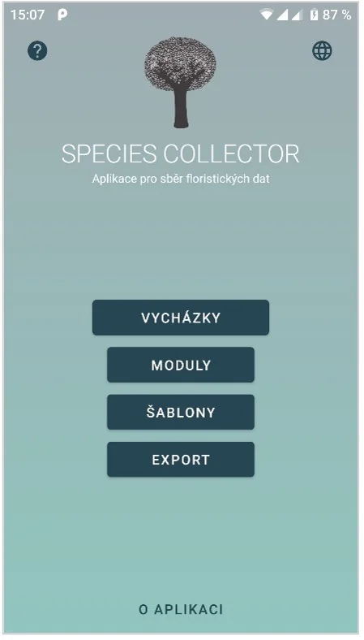
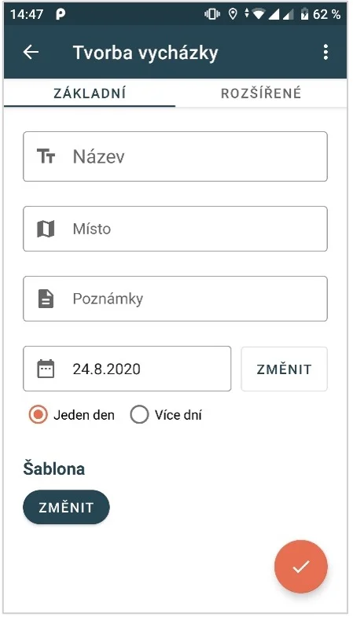
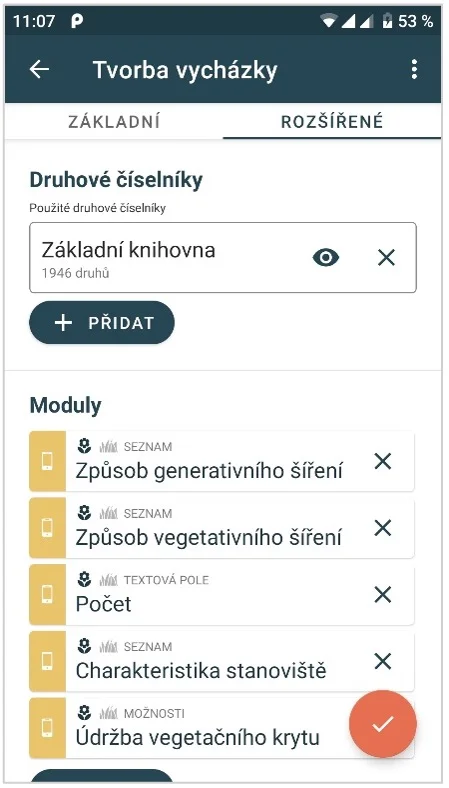
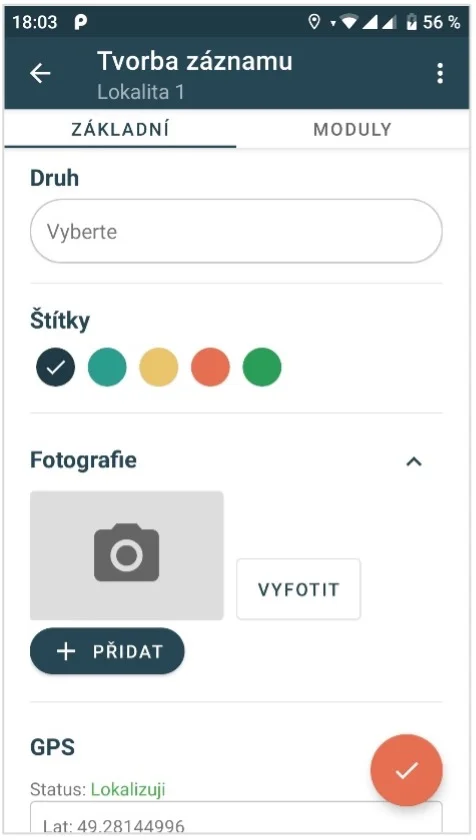
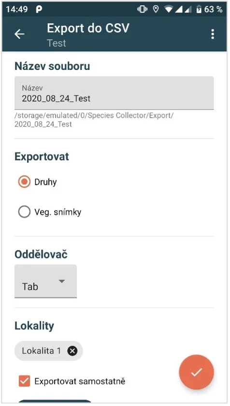

Species Collector
Offline mobile tool for recording vegetation samples, designed for botanists and field researchers worldwide. Enables offline recording of vegetation samples, their editing, and export. Built as a solo freelance project for the Czech Academy of Sciences and published on Google Play.
Allows botanists to record detailed vegetation samples in the field without requiring an internet connection. All data is stored locally on device and can be exported for further analysis. Built entirely in Java for Android, covering the full project lifecycle — from requirements through development, testing, and publishing on Google Play.
Solo/full ownership as a freelance project — product design, Android development, and Google Play release and updates.




